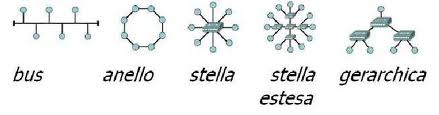

INDICE
1.Web Server
2.Topologie di reti
3.IEEE
Con server web (o web server) si intende un'applicazione software installata in un server fisico in grado di gestire richieste di trasferimento di pagine web tramite l'utilizzo di protocolli come l'HTTP e HTTPS (porta 80 e 443). Le richieste vengono effettuate da client, tipicamente attraverso un web browser. L'insieme di tutti i web server interconnessi a livello mondiale da' vita al cosiddetto World Wide Web.
Teoricamente un qualsiasi dispositivo per cui sia disponibile qualche software che agisca come server web puo' diventare un server web, ma solitamente i dispositivi che ospitano server web sono sistemi hardware dedicati ottimizzati a tale scopo. Ad esempio si puo' installare un server web su un normale PC allo scopo di testare in locale un insieme di pagine web oppure per consentire l'accesso ai propri documenti da altri client host, sia in rete locale, sia via Internet.

2. TIPOLOGIE DI RETI
In telecomunicazioni la topologia di rete e' il modello geometrico (grafo) finalizzato a rappresentare le relazioni di connettivita', fisica o logica, tra gli elementi costituenti la rete stessa (detti anche nodi).
Il concetto di topologia si applica a qualsiasi tipo di rete di telecomunicazioni: telefonica, rete di computer, Internet eccetera.
Gli elementi fondamentali della topologia sono i nodi e i rami. Il nodo individua un elemento della rete connotato da specifiche funzionalità mentre il ramo evidenzia la relazione di connettività tra i nodi. La topologia viene rappresentata quindi sotto forma di grafo in cui i nodi in grado di scambiarsi direttamente l'informazione sono collegati tra loro tramite uno o piu' rami.

3. IEEE
Lo IEEE, acronimo di Institute of Electrical and Electronic Engineers (in italiano: Istituto degli ingegneri elettrici ed elettronici) e' un'associazione internazionale di scienziati professionisti con l'obiettivo della promozione delle scienze tecnologiche.
Nacque il 1 gennaio 1963 dalla fusione di due istituzioni precedenti: l'IRE (Institute of Radio Engineers) e l'AIEE (American Institute of Electric Engineers) nati nel 1884.
La sua sede e' nello stato di New York, negli Stati Uniti. Il nome IEEE viene generalmente pronunciato I triple E.
In accordo con i dati dell'anno 2012, l'IEEE annovera piu' di 420.000 membri in 150 nazioni; comprende tecnici, ingegneri, ricercatori, studenti, professori, nonche' amatori di tutto il mondo nel settore elettrotecnico ed elettronico. Le pubblicazioni dello IEEE sono il 30% della bibliografia e documentazione ingegneristica globale e coprono quasi tutti gli aspetti dell'elettronica e dell'informatica moderna. Inoltre IEEE ha definito oltre 900 standard industriali.